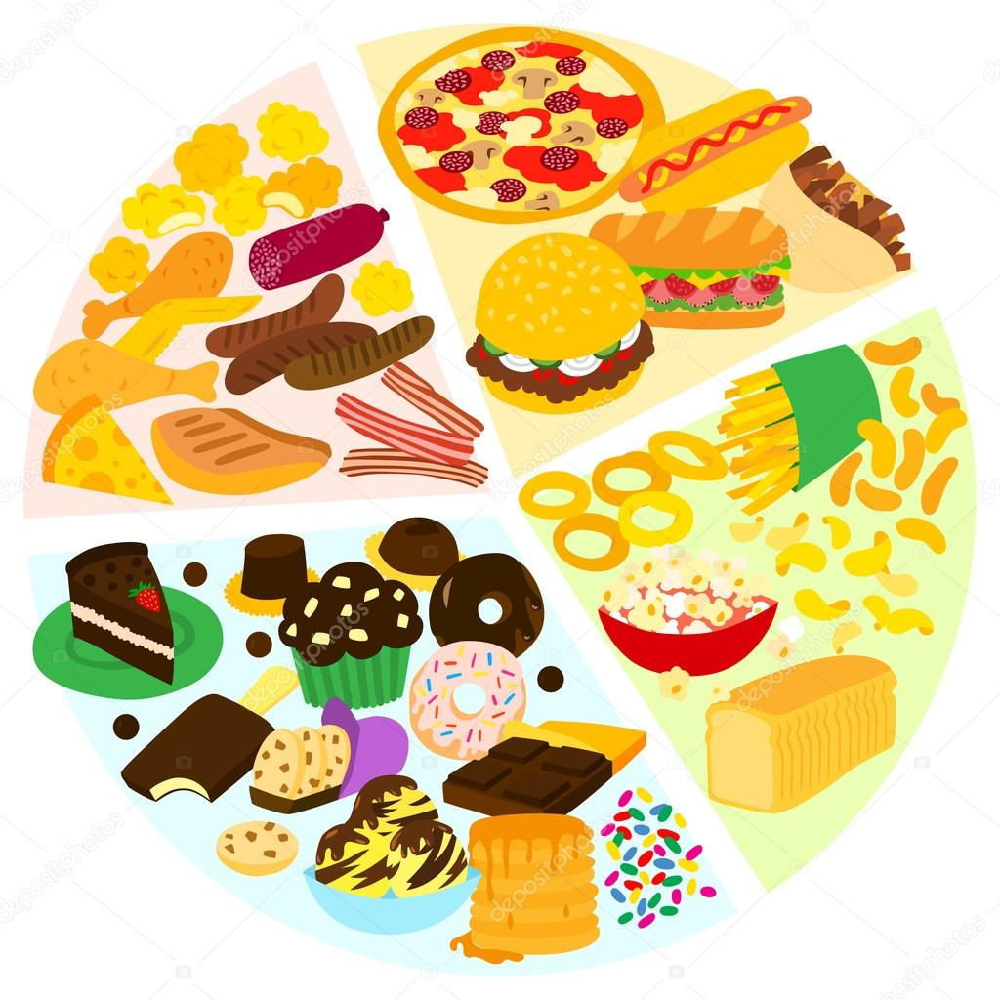

Healthy Food Pie Chart

A healthy diet is a diet that helps maintain or improve overall health. A healthy diet provides the body with essential nutrition: fluid, macronutrients, micronutrients, and adequate food energy. A healthy diet may contain fruits, vegetables, and whole grains, and may include little to no processed food or sweetened beverages.
Unhealthy Food Pie Chart
Junk food is unhealthy food that is high in calories from sugar or fat, with little dietary fiber, protein, vitamins, minerals, or other important forms of nutritional value. It is also known as HFSS food (high in fat, salt and sugar). Precise definitions vary by purpose and over time. Some high-protein foods, like meat prepared with saturated fat, may be considered junk food.